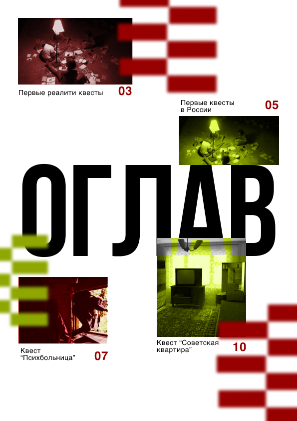
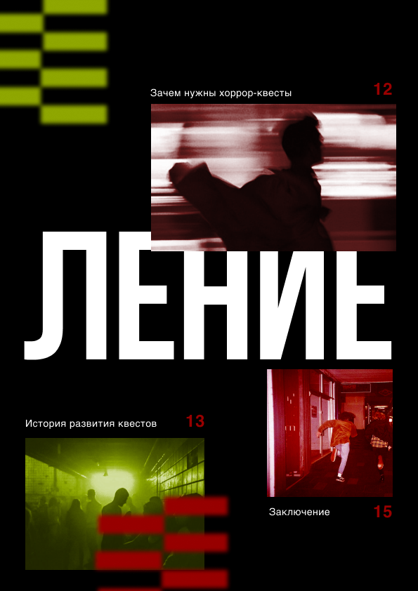
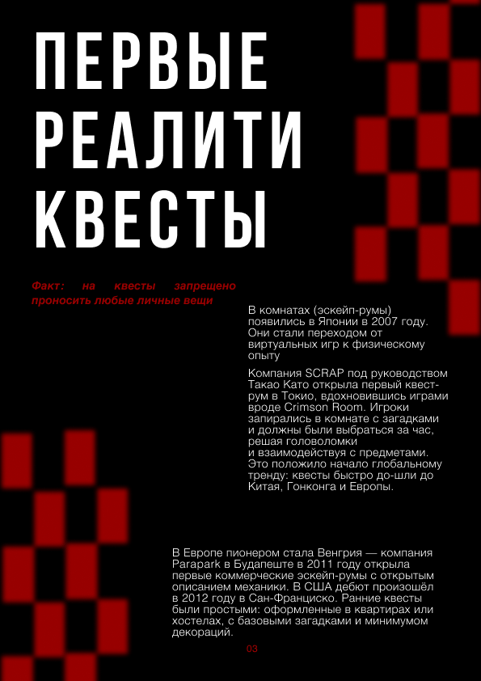
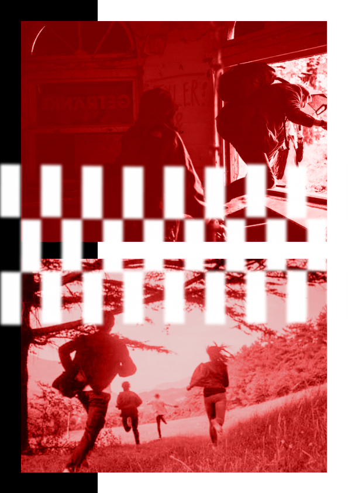
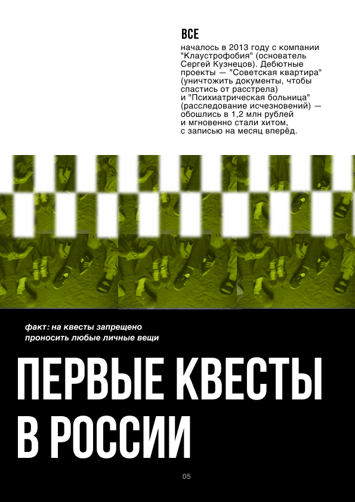

история Квестов
Квесты не появились внезапно — они выросли из человеческого желания исследовать, разгадывать и находить скрытые смыслы в привычном. Когда-то всё начиналось с бумажных загадок, городских игр и импровизированных приключений, где участники сами создавали правила. Затем появились первые «комнаты», где пространство стало частью истории, а каждая деталь — подсказкой. Квест перестал быть просто задачей и превратился в переживание.
Этот зин — попытка зафиксировать, как квесты менялись, что на них влияло и куда они движутся дальше. Истории, наблюдения, фрагменты опыта — всё, что помогает увидеть за игрой нечто большее.



